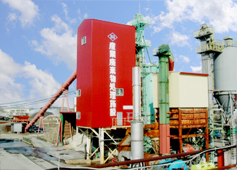
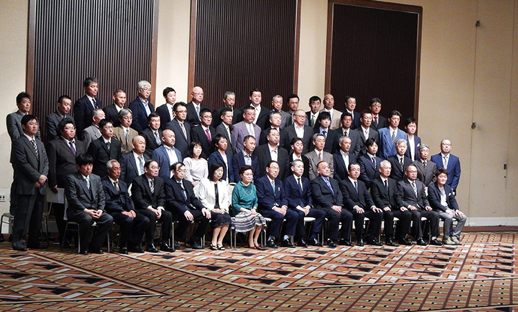

01CIVIL ENGINEERING / PAVING
土木工事・舗装工事
舗装工事は、民間工事も承っております。令和6年度の工事実績を公開しています。
- 土木工事・舗装工事
- 官庁工事実績
- 道路維持工事
- 除雪・排雪
旭川が本社の野田建設工業株式会社です。主に旭川及び旭川近郊の官庁関係土木工事・舗装工事を受注しております。
砂利・再生砂利・アスファルト合材販売部門では、砂利のほか砕石・アスファルト混合材なども取り扱いしております。
旭川の土木工事・舗装工事・砂利、再生砂利、アスファルト合材の販売・産業廃棄物処理中間処理を行っています。
舗装工事は、民間工事も承っております。令和6年度の工事実績を公開しています。
切込砂利40m/m・80m/m、洗25m/m・40m/m、砕石13〜5m/m、コンクリート再生骨材RC40m/m・80m/m、ビリ砂利、砂、玉石、アスファルト合材などを製造・販売しております。
元サイトで詳細を見る ↗
アスファルト舗装廃材、コンクリート塊、汚泥（生コンクリート・スラッジ等）を受け取り、処理後はリサイクル砂利として製造・販売しています。
元サイトで詳細を見る ↗野田建設工業株式会社

各種社会保険完備、制服支給、早出・残業手当、車通勤可、資格取得支援制度。賞与年2回（業績による）、試用期間3か月間有。
お問い合わせいただく際は、お手数ですが必要事項をご記入ください。